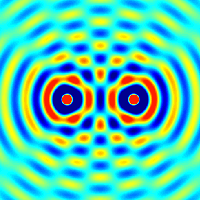

Интерференция волн (лат. interferens, от inter — между + -ferens — несущий, переносящий) — взаимное увеличение или уменьшение результирующей амплитуды двух или нескольких когерентных волн при их наложении друг на друга. Сопровождается чередованием максимумов (пучностей) и минимумов (узлов) интенсивности в пространстве. Результат интерференции (интерференционная картина) зависит от разности фаз накладывающихся волн. Интерферировать могут все волны, однако устойчивая интерференционная картина будет наблюдаться только в том случае, если волны имеют одинаковую частоту и колебания в них не ортогональны. Интерференция может быть стационарной и нестационарной. Стационарную интерференционную картину могут давать только полностью когерентные волны. Например, две сферические волны на поверхности воды, распространяющиеся от двух когерентных точечных источников, при интерференции дадут результирующую волну, фронтом которой будет сфера. При интерференции энергия волн перераспределяется в пространстве. Это не противоречит закону сохранения энергии потому, что в среднем, для большой области пространства, энергия результирующей волны равна сумме энергий интерферирующих волн. При наложении некогерентных волн средняя величина квадрата амплитуды (то есть интенсивность результирующей волны) равна сумме квадратов амплитуд (интенсивностей) накладывающихся волн. Энергия результирующих колебаний каждой точки среды равна сумме энергий её колебаний, обусловленных всеми некогерентными волнами в отдельности. Именно отличие результирующей интенсивности волнового процесса от суммы интенсивностей его составляющих и есть признак интерференции.

Оптические устройства Для создания интерференционных полос, свет от источника нужно разделить на две волны, которые затем должны быть повторно объединены. Традиционно интерферометры классифицируются как системы с разделением по амплитуде или с разделением волнового фронта. В системе с разделением амплитуды светоделитель используется для разделения света на два луча, движущихся в разных направлениях, которые затем накладываются друг на друга для создания интерференционной картины. Интерферометр Майкельсона и интерферометр Маха — Цендера служат распространёнными примерами систем с разделением амплитуды. В системах с разделением волнового фронта, волна разделена в пространстве, как демонстрируется в двухщелевом интерферометре Юнга и зеркале Ллойда. Интерференцию также можно увидеть в повседневных явлениях, таких как радужность и структурная окраска. Например, цвета, видимые в мыльном пузыре, возникают из-за интерференции света, отражающегося от передней и задней поверхностей тонкой мыльной пленки. В зависимости от толщины пленки возникают интерференционные полосы разных цветов.
Материал взят из Wikipedia
© 2020-2021 Сандибек Нурхадис, по всем вопросам пишите по адресу nurkhadissandibek@gmail.com
| scascasdc | ||
|---|---|---|
| dsfdfs |